发布边界
数据库以 2026-08-08 可核实资料为界。已公布但尚未实装的战争债券单独存档，并由程序硬性排除在随机池之外。

超级地球军备部非官方随机挑战终端从你真正拥有的装备中生成一套完整挑战配置。按战争债券整组启用，或精确关闭任何一件装备。
所有结果均来自已发布且已启用的装备。
启用开关决定战略配备是否进入随机池；这里的 1–100 权重决定它在当前敌族任务中被抽中的相对概率。初始值沿用原战备强度值。
伤害均为基础单次伤害。霰弹枪显示单颗弹丸伤害；“耐久”指对耐久部位的伤害。爆炸半径依次为全伤害内圈、衰减外圈与最大影响范围。
数据库以 2026-08-08 可核实资料为界。已公布但尚未实装的战争债券单独存档，并由程序硬性排除在随机池之外。
繁体中文 PlayStation 官方博客存在对应名称时优先采用并转换为简体；其余依据装备语义翻译，型号原样保留，英文名始终随附以便核对。
每次固定抽取主武器、次要武器、投掷物与四项不同战略配备；可选强化剂。背包与支援武器限制会在抽取时即时生效。
《HELLDIVERS 2》及相关名称归 Arrowhead Game Studios / Sony Interactive Entertainment 所有。本工具为非官方粉丝作品。